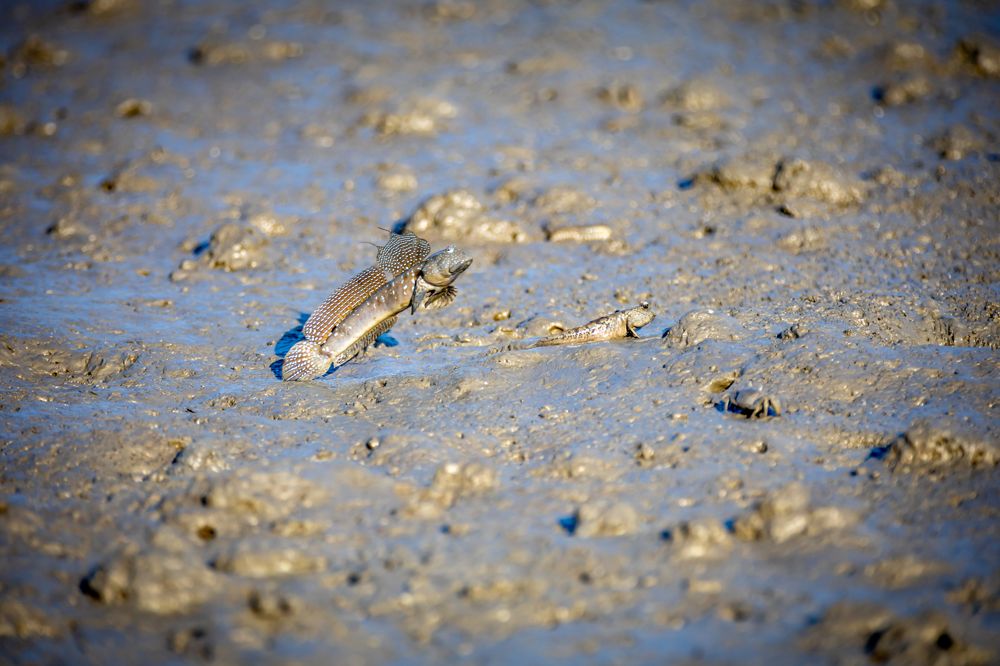

순천만 습지 사운드 아카이브 (2025)
순천만 습지의 자연 소리를 미리 들어보세요
순꽃염전밭
순천 염전의 고요한 오후, 소금꾼의 발걸음이 거울 같은 염전 위에 잔잔한 물결을 그립니다. 드넓은 하늘이 염전에 온전히 비치고, 멀리 산자락까지 평온하게 펼쳐진 풍경 속에서 시간이 천천히 흘러갑니다. 삽질 소리와 바람 소리가 어우러져 만들어내는 자연의 선율, 수백 년을 이어온 염전의 이야기가 발밑 하얀 소금 결정 위로 스며듭니다. 일상의 소중함을 일깨워주는 평화로운 순간입니다.
순천만 저녁 만조
칠흑 같은 하늘 아래 순천만의 고요한 밤이 펼쳐집니다. 만조를 맞은 바닷물이 갯벌의 작은 골들을 따라 스르르 채워지며, 갈대밭 사이로 잔잔한 파도 소리가 속삭입니다. 별빛이 수면에 흩뿌려진 이 순간, 자연의 리듬에 맞춰 흘러가는 물소리가 마음 깊은 곳까지 평온함을 전해줍니다. 시간이 멈춘 듯한 순천만의 밤, 도시의 소음을 잊고 자연과 하나 되는 특별한 치유의 시간입니다.

순천만국가정원 습지
순천국가정원 습지의 푸른 오후, 나무 그늘 아래서 바라본 세상은 온통 생명력으로 가득합니다. 물길을 따라 펼쳐진 초록 들판 위로 새들의 지저귐이 아름다운 선율을 만들어냅니다. 바람에 살랑이는 갈대 소리와 어우러진 새소리가 마음을 정화시키고, 멀리 보이는 다리와 함께 어우러진 자연의 풍경이 평온함을 선사합니다. 도시 속에서 만나는 야생의 소리, 새들이 들려주는 자연의 노래가 일상에 지친 마음에 깊은 위로를 전해줍니다.
순천만가는길
여수만과 순천만이 만나는 경계의 여름 밤, 별빛이 수놓인 하늘 아래 고요한 만조의 바다가 펼쳐집니다. 잔잔한 파도가 해안에 부드럽게 부딪히며 만들어내는 리듬과 풀벌레들의 은은한 합창이 어우러져 자연의 완벽한 선율을 연주합니다. 멀리 반짝이는 불빛들이 수면에 길게 반사되고, 나무 그늘 아래 데크에서 바라본 이 풍경은 마치 꿈속 같습니다. 도시의 번잡함을 잊게 해주는 평온한 밤, 자연이 선사하는 깊은 위로를 온몸으로 느낄 수 있는 특별한 순간입니다..
용산전망대 새벽
여름밤이 새벽으로 넘어가는 그 경계의 시간, 순천만 전망대는 소리의 교향곡으로 가득합니다.
밤새 울어대던 매미들이 새벽 공기와 함께 마지막 열창을 토해내고, 그 사이로 이른 새들의 지저귐이 하나둘 스며들기 시작합니다. 참새와 직박구리들이 먼저 깨어나 작은 속삭임으로 하루를 열고, 곧이어 까치와 까마귀들의 힘찬 울음소리가 공기를 가릅니다.
바람은 갈대밭을 스치며 사르르 소리를 내고, 바다 위를 건드리며 잔잔한 파도 소리를 만들어냅니다. 나뭇잎들이 바람에 살랑이며 내는 속삭임과 함께, 자연의 모든 생명체들이 하나의 거대한 합창단이 되어 새로운 하루의 시작을 알립니다.
이 모든 소리들이 별궤적이 그어진 하늘 아래 어우러져, 도시에서는 결코 들을 수 없는 순수하고 원시적인 자연의 선율을 만들어냅니다. 매미의 열정, 새들의 희망, 바람의 자유로움이 하나로 녹아든 이 순간은 마음 깊은 곳까지 평온함을 전해주는 특별한 시간입니다.
용화사
용화사에서 들려오는 목탁소리가 바다 위로 은은하게 퍼져나갑니다. 스님들의 깊고 중후한 독경소리가 고요한 공기를 가르며, 마음 깊은 곳까지 스며드는 평온함을 전해줍니다. 그 사이로 풀벌레들의 작은 소리가 자연스럽게 어우러져 전통이 살아 숨 쉬는 신성한 공간임을 느끼게 합니다. 목탁의 규칙적인 리듬과 불경소리가 바다와 산을 가득 채우며, 세속의 번뇌를 잊게 해주는 깊은 명상의 시간을 선사합니다. 이곳에서 들리는 소리는 단순한 자연음이 아닌 영혼을 정화하는 신성한 울림입니다.

짱뚱어밭
짱순천만의 썰물이 빠진 뻘 위에서 짱뚱어들이 자유롭게 뛰어노는 평화로운 오후입니다. 진흙 위를 통통 튀며 움직이는 작은 발자국 소리와 물이 빠지며 만들어내는 보글보글 소리가 습지만의 독특한 선율을 연주합니다. 갯벌에서 먹이를 찾는 짱뚱어들의 작은 움직임이 만드는 소리, 멀리서 들려오는 갈매기 울음소리와 바람에 흔들리는 갈대 소리가 어우러져 생명력 넘치는 자연의 교향곡을 만들어냅니다. 이 작은 생명체들이 살아가는 모습에서 순천만 생태계의 소중함과 자연의 신비로움을 느낄 수 있습니다.

화포항 저녁만조 통통배
순천만 화포항의 고요한 밤, 만조로 가득 찬 바닷물 위에 어선들이 평화롭게 떠 있습니다. 잔잔한 파도가 배 옆구리에 부드럽게 부딪히며 만들어내는 맑고 경쾌한 물소리가 밤의 정적을 깨뜨립니다. 통통통, 찰박찰박, 배들이 물결에 살짝 흔들리며 내는 리듬감 있는 소리가 자장가처럼 마음을 편안하게 해줍니다. 멀리 다리 위의 불빛들이 수면에 길게 반사되고, 어선 위 따뜻한 조명이 어둠을 밝히는 가운데, 파도와 배가 만들어내는 자연스러운 선율이 화포항의 평온한 밤을 가득 채웁니다.